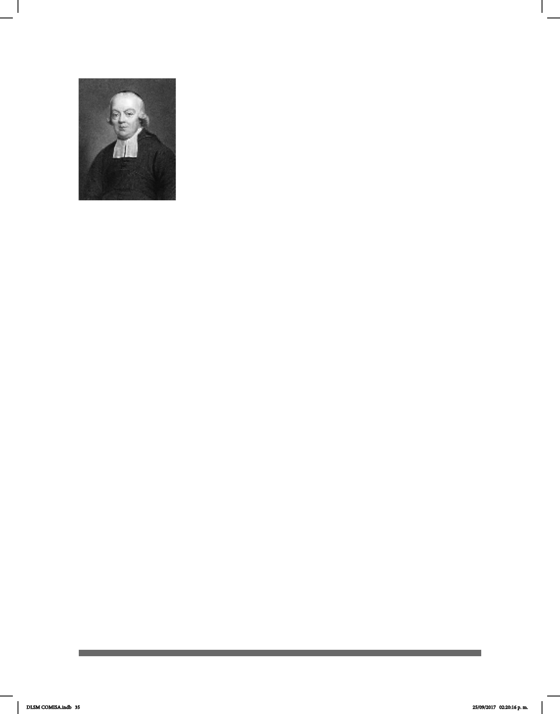

35
La gura más importante en la educación de los sordos en el siglo
XVIII fue el Abad De L’Epée (1712-1789) quien fundó la primera
escuela pública para sordos en Francia. Comenzó a aprender la
lengua de señas y a utilizarla como medio de enseñanza de la
lengua y la cultura francesa para los sordos. Su objetivo era que
los sordos aprendieran a leer y escribir. Para conseguir esos
objetivos consideraba insuficiente el lenguaje natural de los
sordos, por lo que inventó las señas metódicas que permitían
incorporar la gramática francesa en la comunicación manual.
Además, inventó algunas señas para expresar artículos, preposi-
ciones y conjunciones: el articulo denido “le” era señado por el
dedo índice curvado en la ceja y “la” en la mejilla. El articulo inde-
nido “un” tomó el mismo signo que el sombrero masculino y el
]indenido femenino, “une”, era representado por el signo de un gorro de señora. Un
curioso ejemplo de esta relación que trataba de establecer entre el lenguaje natural de
señas y el francés fue el signo que inventó para la preposición “para”. Comienza con
el dedo índice señalando hacia la frente, lugar de las intenciones, y termina con el
dedo apuntando hacia el objeto.
Cuando necesitaba crear una nueva seña veía si la palabra sugería algo directamente a
sus alumnos. Si no era así, descomponía la palabra en conceptos más sencillos y la
expresaba a través del conjunto de estas señas. Por ejemplo, la palabra “creer”, fue
analizada como formada por “conocer”, “sentir”, “decir” y ”no ver” y su expresión en el
lenguaje era la suma de los cuatro signos más el correspondiente al del verbo.
El método elaborado por L’Epée en Paris tuvo su contrapartida en el defendido por
Heinicke en Leipzig “quien subrayaba la importancia de un enfoque exclusivamente
oral” (García 2004). Su posición era excluyente de cualquier otro método, a los que
consideraba inútiles y fraudulentos.
La discusión mantenida por medio de correspondencia escrita entre L’Epée y
Heinicke “a nales del siglo XVIII puede considerarse como el comienzo de la inacabada
controversia entre el método oral y el manual” (Torres, 1999). Mientras que las
postulaciones de L’Epée se impusieron en las primeras décadas del siglo XIX, las
postuladas por Heinicke dieron completamente la vuelta a la situación en la segunda
mitad de dicho siglo.
El Abad Sicard, que había dirigido una escuela para sordos en Burdeos, fue
seleccionado para suceder a L’Epée en la dirección del nuevo Instituto Nacional para
Sordomudos de París. Sicard modicó el método de L’Epée intentando que el francés
señado que se utilizaba con los alumnos fuera menos complicado. Otorgó una mayor
importancia a la comprensión del signicado en el contexto concreto en el que una
expresión se producía, así como al análisis del papel sintáctico de cada palabra, a la
función que desempeña el verbo en la frase y a la práctica de la expresión escrita de
frases sencillas.
Abad Charles-Michel
de L´Epée
DLSM COMISA.indb 35 25/09/2017 02:20:16 p. m.